Minecraft Legacy Console Edition is the umbrella term for all the various console editions of Minecraft
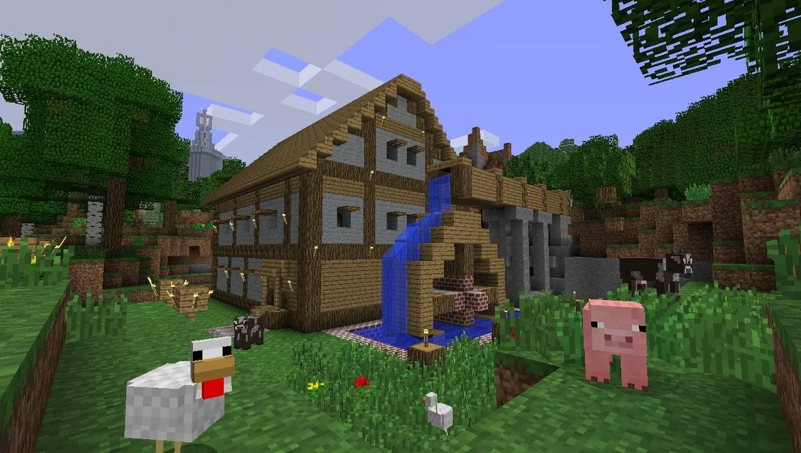
All versions were devloped by Mojang and 4J Studios, with 4J being the main brains behind console development
2013
2013
2014
2014
2014
2015
2015
When making their version of Minecraft, 4J Stduios decided that their edition should introduce the game to people who are unfamiliar with it. At the time Minecraft did not really teach players about itself.
Their main solution was the "Tutorial World." An exclusive feature to Console Edition where there was a custom made world to teach players how to play the game.
This was done by building specific areas to explain specific aspects of the game. They also made tooltips appear on screen when interacting with something for the first time!
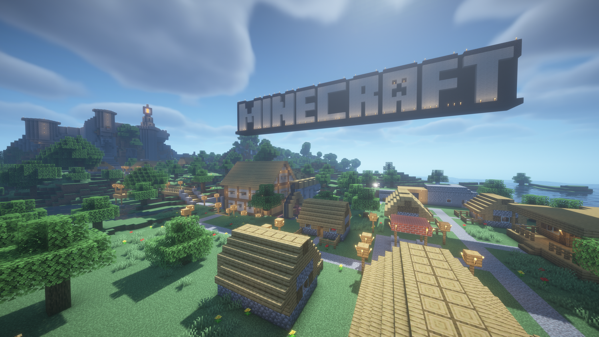
At every major update, Title Update (TU), they would make a new Tutorial World to reflect the new things in the game. There were 7 official completely unique worlds!
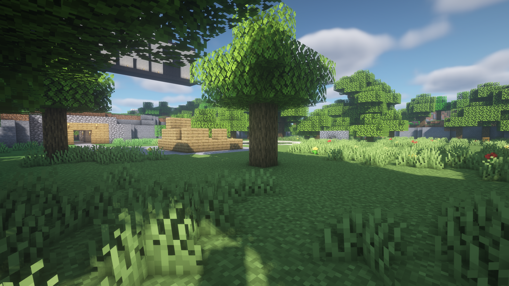
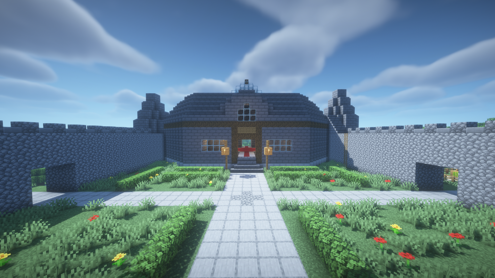
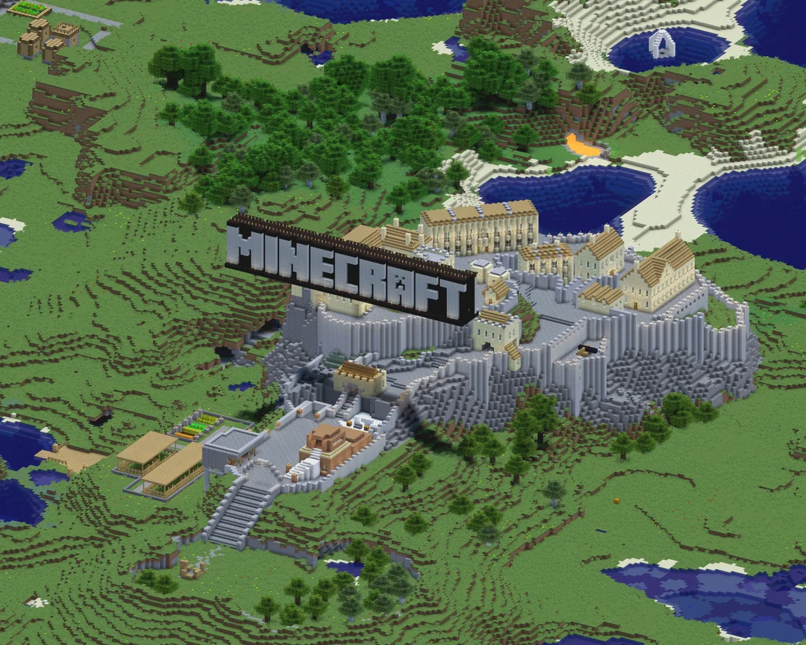
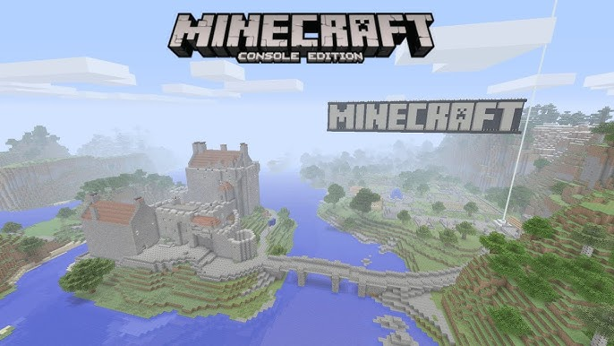
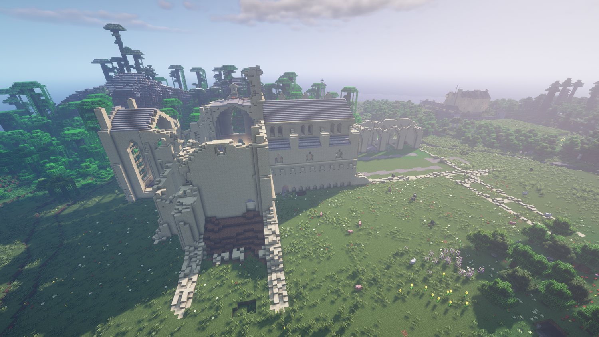
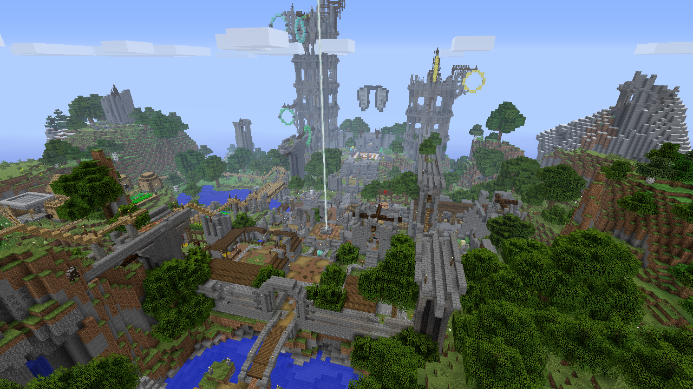
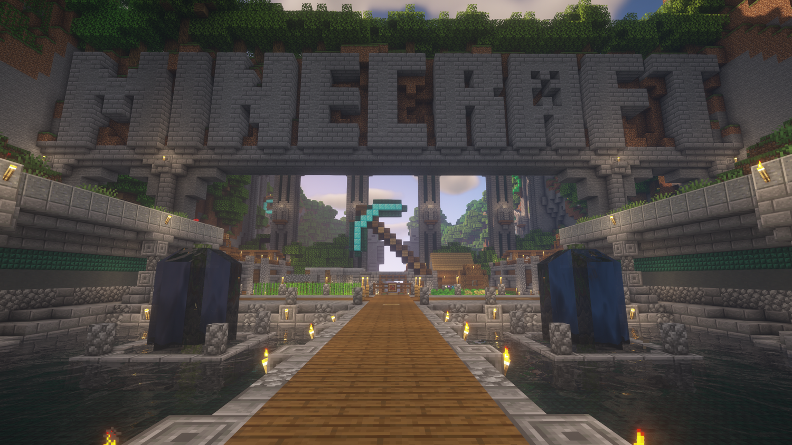
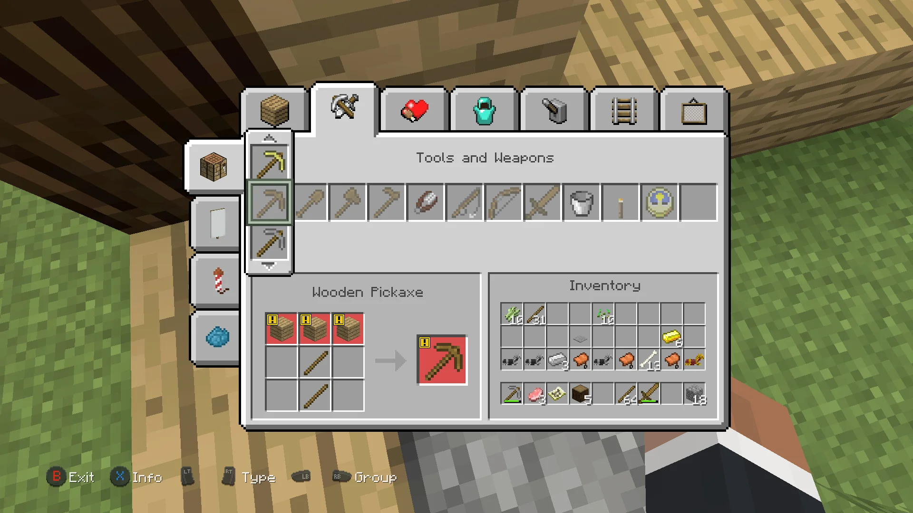
Console Edition Crafting
Console Edition had limted cursor movement since it used controller controlls, making manually moving items to the crafting table slots teadious. To get over this hurdle 4J put every item in the table and let you select the icon of what you wanted to craft if you had the appropriate materials
This idea of Click and Craft would later come to other editions as the "Craftimg Recipe Book"
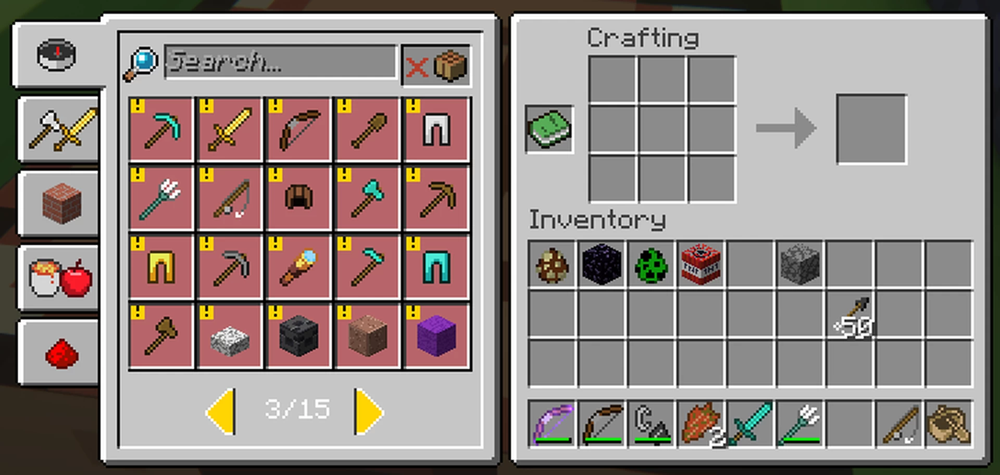
Modern Day Crafting (Recipe Book Left)
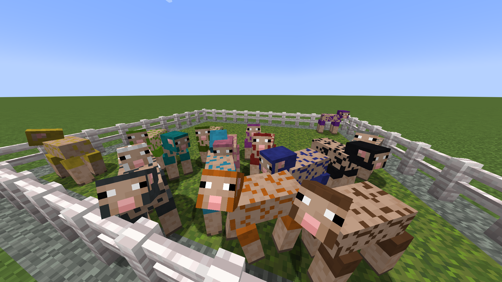
Various Sheared Sheep
On Console Edition when a sheep was dyed and sheared it would keep that color like in the image to the right. On other additions it would turn white while it was sheared. This was added to Bedrock and recently to Java.
Also when two sheep of different color made a baby it could come out as a mix between the two! Also recently added to Java
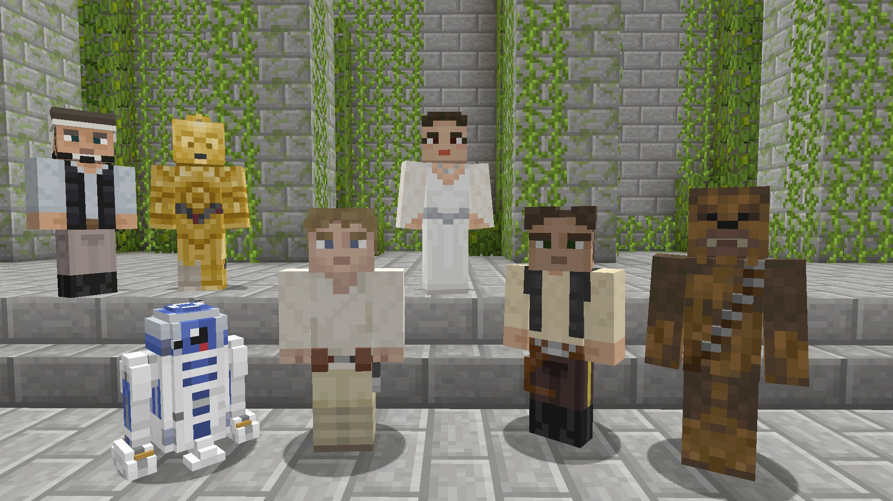
Normal and Abnormal skins
On the left you can see some skins from the Star Wars skin pack. As you can see there are some normal looking skins like Luke Skywalker and Han Solo. You may also notice some slightly smaller and bigger skins like R2-D2 and Chewbacca.
Console edition allowed for skins to be smaller or bigger than your avgerage skin, something Java still does not have to this day. Bedrock edition does have this but mostly in ways of cosmetics you can buy and put on your existing character.
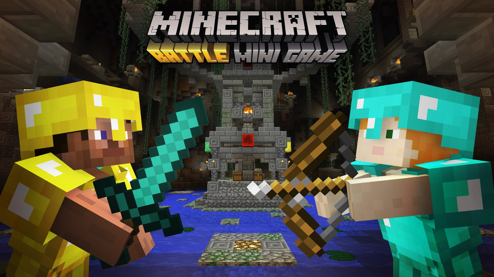
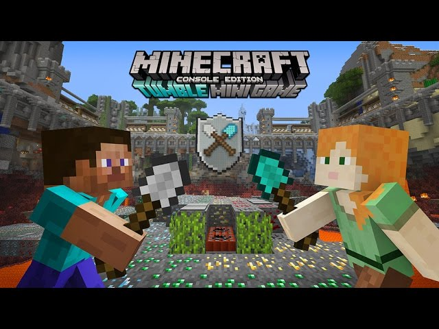
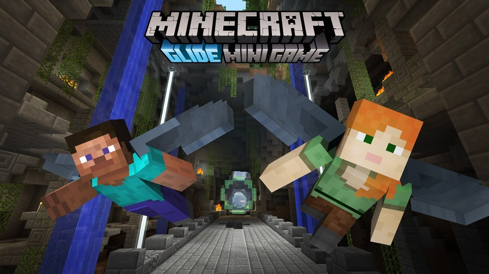